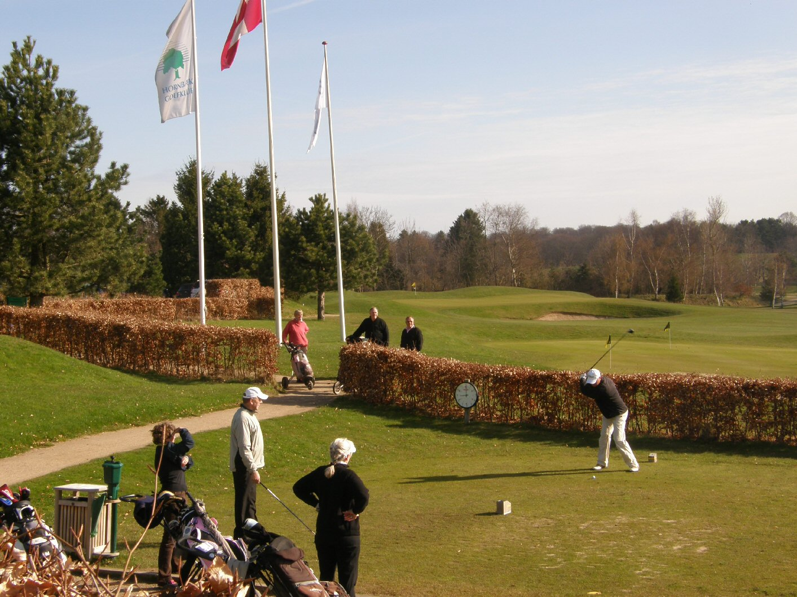

<div class="pages">
  <div data-page="2013-10-25-10-20-56" class="page navbar-fixed toolbar-fixed" >
    <div class="navbar">
      <div class="navbar-inner">
        <div class="left">
          <a href="#" class="link back icon-only"><i class="icon icon-back"></i></a>
          <!-- <a href="#" class="back link icon-only"><i class="icon icon-back"></i></a> -->
        </div>
        <div class="center">senior Club</div>
        <!-- <div class="right"></div> -->
        <div class="right">
        </div>
      </div>
    </div>
    <div class="page-content" style="padding-top:45px;">
       <div class="content-block">
          <p>senior Club</p>
          <p>SENIOR GOLF: Fun, Exciting, Social</p>
          
          <p>Senior Club is a very social and cozy "club in the club." It's an incredibly active club where everyone quickly get to know each other. The jokes and the tone is very unpretentious. In recent years there have been between 75 and 100 participants in every match.
          <br /><br />
          To participate in senior matches must have bagmærke and be aged 50 before the end of 2016 .... 
          If a participant meets the criterion of age, you spouse / partner participate REGARDLESS OF AGE.
          <br /><br /> 
          We play every Monday and you can play at any time of the day, however Senior club has reserved time between the hours. 15:00 and 17:00. If you want to use these reserved tee times, ask the Secretariat to register as a member of Senior's matches and you can book times via Golfbox.
          <br /><br /> 
          The matches played as Stableford over 10 holes (Hole 1 to 10). If you want to, you can of course play 18 holes, but it is the score on the first 10 who is counting. It is played in two series: A-series is handicap 0 to 22.0 and B-row 22.1 and above. There is no upper limit. All with bagmærke can participate!
          <br /><br /> 
          The matches starts on the first Monday in April, if the pitch is ready, and then played every Monday throughout the season excluding holidays (eg. Easter and Pentecost). The first Monday of the month are super cozy meals together with Prizes for the previous month's match. Ending dinner is the first Monday in October, when we tradition treats roast pork and rice á la mande with associated almond gifts.
          <br /><br /> 
          
          <br />
          Registration and payment for the eating takes place in the future via Golfbox.<br />  
          It saves us many hours pengeindkradsning and settlement hassle, with last-minute registration and cancellation / no show.<br />  
          The procedure is: <br /> 
          Log into Golfbox, go to "Club Tournaments", find Senior Dining and date, click on it, register you and pay. Simple and effective. <br /> 
          You can pay by credit card / Visa credit card or Mobilepay. <br /> 
          Registration and payment can also be made through the Secretariat <br /> 
          There payable NOT quotas for senior club, only match-fee of 20, - kr. Per. walk. This is paid before you go out. Assuming before noon. 15:00 be match-fee in the box in the Secretariat, where you can also sign the attendance list. After pm. 15:00 takes place usually in the restaurant.
          <br /><br />  
          The surplus in the Senior Club will go to Junior work, and in recent years has the grant been between 7,000 and 10,000 kr.
          <br /><br />  
          On 5th June will be organized a trip to Passebækgård: "Tove Sørensen Memorial". A 9 hole match followed by lunch and great prizes. Here are juniors invited and played with 3 seniors and 1 junior in each ball. It's always fun and cozy, and the trip will be oversubscribed within a few days.
          <br /><br /> 
          Welcome to a fun and exciting community.
          <br /><br />  
          And remember: Active golfers live on average five years longer
          <br /><br />  
          Best greetings from the President
          <br /><br /> 
          Klaus Føge - Phone: 40 15 21 13 - Mail: <a href="#">klaus@klausfoge.dk</a></p>
          <a href="http://www.hornbaekgolf.dk/klubben/klubber-i-klubben/2013-10-25-10-20-56/seniorklubben-galleri" class="external">Senior Club - Gallery</a>
        </div>
    </div>
    </div>
    </div>
  </div>
</div>
